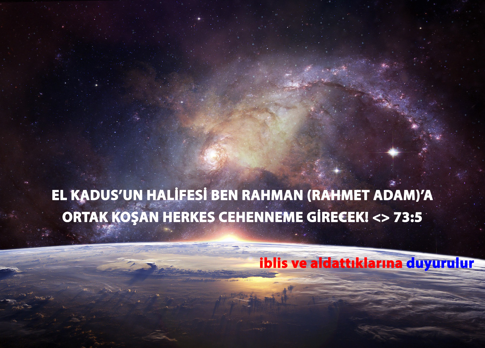
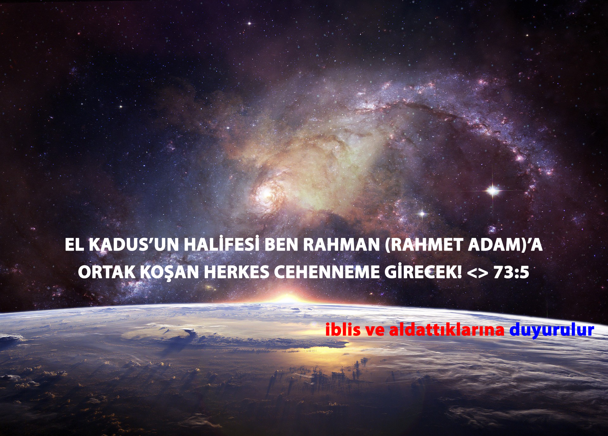

Miracle 19 & True Clock of Resurrection
74:29 (It shows) TABLETS to people:
| number of repetitions of | |
|---|---|
| اسم <> شهيد SHAHEED <> ISIM* WITNESS <> NAME |
19 = |
| الله ALLAH* **THE GOD |
2698 = |
| الرحمن AR RAHMAN THE COMPASSIONATE |
57 = |
| الرحيم AR RAHIM **THE MERCIFUL |
114 = |
| sum of coefficients | 152 = |
| abjad value of | |
|---|---|
| 19 x 1 | واحد VAHID ONE |
| 19 x 142 | ذوالفضل العظیم ZUL-FADL-IL AZIM POSSESSOR OF GREAT BOUNTY |
| 19 x 3 | مجید MAJID GLORIOUS |
| 19 x 6 | جامع JAMI GATHERER |
| 19 x 8 | 1 + 142 + 3 + 6 |
* non-lean versions of "اسم" and "الله" has not counted as false positives.
** 9:128-129 are from satan! NOT FROM THE GOD!
WITNESS / "شهيد" Occurs In QURAN 19 Times As Active Noun.
| IN THE NAME OF ALLAH RAHMAN AND RAHIM! | ||||||||||||||||||||||
| بسم الله الرحمن الرحيم | ||||||||||||||||||||||
| بسم | الله | الرحمن | الرحيم | |||||||||||||||||||
| 1 | 2 | 3 | 4 | 5 | 6 | 7 | 8 | 9 | 10 | 11 | 12 | 13 | 14 | 15 | 16 | 17 | 18 | 19 | ||||
| ب | س | م | ا | ل | ل | ه | ا | ل | ر | ح | م | ن | ا | ل | ر | ح | ي | م | ||||
| 1 | 2 | 60 | 40 | 2 | 1 | 30 | 30 | 5 | 3 | 1 | 30 | 200 | 8 | 40 | 50 | 4 | 1 | 30 | 200 | 8 | 10 | 40 |
| 1 | 2 | 62 | 102 | 2 | 103 | 133 | 163 | 168 | 3 | 169 | 199 | 399 | 407 | 447 | 497 | 4 | 498 | 528 | 728 | 736 | 746 | 786 |
| 1 | 3 | 2 | 4 | 3 | 6 | 4 | 6 | |||||||||||||||
| 1 | 3 | 2 | 7 | 3 | 13 | 4 | 19 | |||||||||||||||
| 1 | 102 | 2 | 66 | 3 | 329 | 4 | 289 | |||||||||||||||
| 1 | 102 | 2 | 168 | 3 | 497 | 4 | 786 | |||||||||||||||
| 1 (2 60 40) 2 (1 30 30 5) 3 (1 30 200 8 40 50) 4 (1 30 200 8 10 40) = 19 x 66... | ||||||||||||||||||||||
| 1 (2 62 102) 2 (103 133 163 168) 3 (169 199 399 407 447 497) 4 (498 528 728 736 746 786) = 19 x 66... | ||||||||||||||||||||||
| 1 (3) 2 (4) 3 (6) 4 (6) = 19 x 697034 | ||||||||||||||||||||||
| 1 (3) 2 (7) 3 (13) 4 (19) = 19 x 69858601 | ||||||||||||||||||||||
| 1 (102) 2 (66) 3 (329) 4 (289) = 19 x 5801401752331 | ||||||||||||||||||||||
| 1 (102) 2 (168) 3 (497) 4 (786) = 19 x 58011412367094 | ||||||||||||||||||||||
| sura | e ا | l ل | m م | r ر | ŝ ص | total |
|---|---|---|---|---|---|---|
| 2. the heifer البقرة | 4504 | 3202 | 2195 | 9901 | ||
| 3. the amramites آل عمران | 2511 | 1892 | 1249 | 5652 | ||
| 7. the purgatory الأعراف | 2521 | 1530 | 1164 | 97* | 5312 | |
| 10. jonah يونس | 1323 | 913 | 257 | 2493 | ||
| 11. hood هود | 1373 | 795 | 325 | 2493 | ||
| 12. joseph يوسف | 1315 | 812 | 257 | 2384 | ||
| 13. thunder الرعد | 610 | 480 | 260 | 137 | 1487 | |
| 14. abraham ابراهيم | 589 | 452 | 160 | 1201 | ||
| 15. al-hijr valley الحجر | 493 | 323 | 96 | 912 = 19 x 48 | ||
| 29. the spider العنكبوت | 771 | 554 | 344 | 1669 | ||
| 30. the romans الروم | 542 | 394 | 317 | 1253 | ||
| 31. luqmaan لقمان | 353 | 297 | 173 | 823 | ||
| 32. prostration السجدة | 264 | 155 | 158 | 577 | ||
| totals | 17169 | 11799 | 5860 | 1232 | 97 | 36157 = 19 x 1903 |
| sura | k ك | h ه | y ي | a ع | ŝ ص | total |
|---|---|---|---|---|---|---|
| 19. mary مريم | 137 | 175 | 343 | 117 | 26 | 798 = 19 x 42 |
| sura | t ط | h ه | s س | m م | total |
|---|---|---|---|---|---|
| 19. mary مريم | 175 | 175 | |||
| 20. t.h. طه | 28 | 251 | 279 | ||
| 26. the poets الشعراء | 33 | 94 | 484 | 611 | |
| 27. the ant النمل | 27 | 94 | 121 | ||
| 28. history القصص | 19 | 102 | 460 | 581 | |
| totals | 107 | 426 | 290 | 944 | 1767 = 19 x 93 |
| sura | y ي | s س | total |
|---|---|---|---|
| 36. y.s. يس | 237 | 48 | 285 = 19 x 15 |
| SURA | Ŝ ص |
|---|---|
| 7. the purgatory الأعراف | 97* |
| 19. mary مريم | 26 |
| 38. ŝ. ص | 29 |
| total | 152 = 19 x 8 |
| sura | ĥ ح | m م | total |
|---|---|---|---|
| 40. forgiver غافر | 64 | 380 | 444 |
| 41. detailed فصلت | 48 | 276 | 324 |
| 42. consultation الشورى | 53 | 300 | 353 |
| totals | 165 | 956 | 1121 = 19 x 59 |
| sura | ĥ ح | m م | total |
|---|---|---|---|
| 43. ornaments الزخرف | 44 | 324 | 368 |
| 44. smoke الدخان | 16 | 150 | 166 |
| 45. kneeling الجاثية | 31 | 200 | 231 |
| 46. the dunes الأحقاف | 36 | 225 | 261 |
| totals | 127 | 899 | 1026 = 19 x 54 |
| sura | ĥ ح | m م | total |
|---|---|---|---|
| 41. detailed فصلت | 48 | 276 | 324 |
| 42. consultation الشورى | 53 | 300 | 353 |
| 43. ornaments الزخرف | 44 | 324 | 368 |
| totals | 145 | 900 | 1045 = 19 x 55 |
| sura | a ع | s س | q ق | total |
|---|---|---|---|---|
| 42. consultation الشورى | 98 | 54 | 57 | 209 = 19 x 11 |
| sura | q ق |
|---|---|
| 50. q. ق | 57 = 19 x 3 |
| sura | n ن |
|---|---|
| 68. the pen القلم | *133 = 19 x 7 |
* Letter نٓ in The Original Revelation of The Honourable QURAN written as نُّ(ون) "NuN" with 2 نٓ 'N's in the verse 68:1 ن(ون) والقلم وما يسطر(ون), like written the word ذَا ٱلنُّ(ونِ) (Zan NuN) which means "Possessor of NuN نُّون" (JoNah Noah BahattiN UzuNkaya) in The Verse 21:87. As The Verse 68:1 says: "NuN. نُّون The Pen and What they write! نون والقلم وما يسطرون", It is fallacy to count Letter نٓ on reading NuN! No It Already Written As NuN! نون!
68:1 NuN is نون! http://19x334.com/#ovpl=0&onv=0&sura=68&count=ن
ن count: 133 = 19 x 7
BEWARE! > Abjad Value: 91681 --> 91(sUN) 68:1(nUN)
number of words: 304 = 19 x 16
http://19x334.com/#ovpl=0&sura=20&verse=14&count=ن
Count of ن in verse 20:14 is 5 and abjad value of ن is 50 total : 55 : (Name of Sura 55 is RAHMAN)
20:14 إِنَّنِي أَنَا اللَّهُ لَا إِلَهَ إِلَّا أَنَا فَاعْبُدْنِي وَأَقِمِ الصَّلَاةَ لِذِكْرِي İ(N)(N)e(N)i e(N)ALLAHu La ilahe illa e(N)e fa'bud(N)i ve ekımis salate li zikri. "Şüphesiz Ben Benim ALLAH. Benden başka ilah yoktur. Artık Bana kulluk et. Ve Beni anmak için namaz kıl." "Indeed I Am I ALLAH. There is no god except I. Now on worship Me. And Establish Prayer For Rememberance Of Me."
In The Year 20:14 = 19 x 106 (نون) ; THE LORD OF THE UNIVERSES: RAHMAN has talked to HIS Servant
Name of Sura 55 is RAHMAN and verse 20:14 has 5 ن s in it:
55:5 The su(N) and the moo(N) are PERFECTLY CALCULATED!
Sura 91 is The Su(N)
Sura 54 is The Moo(N)
75:8 And the moon is eclipsed.
Hijri (14.5).1709 UTC 15:49:31
75:9 And the su(N) and the moo(N) are (collected) together.
(NuN) 0 End of The World : Collapsing Of 7 Fold Heavens Into (NuN) 0 is NuN! : "(N)ot A (N)umber"
Sura 91 The Su(N) + Sura 54 The Moo(N)
Time of (NuN) 0 = (14.5) . 1709 UTC 15:49:31
20:15 "Indeed The Hour (The End of The World: The Day of The Religion: 17 January 2280 = 1919+19x19 UTC 15:49:31) Is Coming! I Will Almost Hide It! For Every Soul Punished By What It Walked With." "Şüphesiz O Saat(Dünyanın Sonu: Din Günü: 14 Cemaziyelevvel 1709 UTC 15:49:31) Geliyor! Her Nefsin Yürüdüğü Şey İle Cezalanması İçin Ben Neredeyse Onu Gizleyeceğim!"
https://alquran.eu/?searchText=%5Bضصثقفغعهخحجةةشسيبلاتنمكظطذدزرو،%5D&searchOption=whole&trans=Quran&selectedSuras=1,&analyze=1&case_sensitive=0&non_transliteration=1&srchT=Quran&divNum=19
I am Dr. Rashad Khalifa Hood Salih Job Joseph Moses Suleiman Zulkifl Jesus AbdURRAHMAN Ayyıldız had heard(53:13-18) voice of THE MOST SACRED has talked to Servantee me in 19x19 th. Day of Year The Year 2014 = 19 x 106(نُّون = "NuN") of the day 27.12.2014 that sum of its digits: 2+7 + 1+2 + 2+0+1+4 = 19 after 95 year later from Year 1919 and 19x14 year before End of The World 1919+19x19 = 2280 January 17 UTC 15:49:31
https://ALQURAN.eu/?searchText=[ق والقرءان المجيد]&searchOption=whole&trans=Quran&selectedSuras=50,&analyze=1&case_sensitive=0&non_transliteration=1&srchT=Quran&divNum=19
As Sura/Chapter 50 verse 1 points out: ق والقرءان المجيد Kaf and The Glorious Quran ... By Searching and Analyzing Regular Expression of [قوالقرءانالمجيد] that looks for every word and verse that has at least one of the member letters in its set [between squared pharanthesis] on a AlQuran.eu we found there is only 1 remained verse and there is only 1 remained word that has none of the (10) letters in verse 50:1 "ق والقرءان المجيد Kaf and The Glorious Quran" and that 1 verse is: 20:1 طه
20:1 TH
T(9)H(5) = 14
20 TH points out to Year And Verse 20:14 = 19 x 106 نُّون (NuN) When Lord Of The Universes ALLAH has talked to HIS Servant me Moses AbdURRAHMAN While Showing me Great Sign Of Resurrection! 53:18 The Praying Human Shaped City! Istanbul(334 = القسطنطينيه)! Number of NuNs in Sura 68 is 266 = 19 x 14 Number of NuNs in Sura 68 is Not 133 = 19 x 7 But Why? Because Every Letter ن should be counted twice hence they all are نُّونs(68:1)! 266 Day Is Pregnancy Period for a baby! And There Remained 266 = 19 x 14(TH) Years To Resurrection at 2280 when The Lord Has Showed To HIS Servant Sign Of Resurrection(Praying Human Shaped City القسطنطينيه 334 Looking To --> Kaba) At Year 20:14(TH) after 95(TH) = 19 x 5 years later from 1919 ! 14.5.1709 (When the moon is eclipsed 75:8 --> UTC 15:49:31) How many bones THE 1 AND ONLY GOD Has Created at your hand fingers? 14 And How many fingers THE 1 AND ONLY GOD Has Created in your hand? 5 14.5.1709 (When the moon is eclipsed 75:8 --> UTC 15:49:31) 75:5 But Human wish to deny what is front of him (even his own hands!) Because Believers To ResurrectioN are Believers To ResurrectioN! Are you Got It? NuN! The Lord ALLAH has promised me ذَا ٱلنُّونِ Zan NuN Possessor of NuN نُّون JoNah Noah BahattiN UzuNkaya as my baby boy If Girl of Shuayb Nabi Yıldızhan Fidan: Siporra Queen of Sheba Belkıs: Rabia Fidan(145) that has borned in city of Ağrı where her promised soN's ship has laNded at Mount of Ararat Cudea(Ağrı Cudi Dağı) marries me and she has 747474 in her identity number and she has just borned 2 days before me(24 May and 26 May) in 145 th. Day of The Year.
14.5.1709 (When the moon is eclipsed 75:8 --> UTC 15:49:31)
And she is(75:2,75:17-18-19) the reader of chapter 75 resurrection to me at year 20:15(17:09th. Composite) while i have understanding the time of the day of the resurrection will be at moon eclipse(75:8) from Book and with Permission of ALLAH! So Believing To Day of The Resurrection! (14.5 --> 19(seven pairs 1709 <> 1919+19x19) ) Is Implies --> To Believing نُّون (NuN) 106 X 19 = 20:14(TH) therefore Quran Al-Majid (50:1 and Zan NuN and The Proof He Bringed With: 666) And Disbelieving نُّون (NuN) 106 Is Simply To Disbelieving To Day of The Resurrection!(14.5.1709 UTC 15:49:31) And Believing ن (N) 50 Is To DisBelieving To Day of The Resurrection if you are not ignorant and hear the نُّون (NuN) 106 x 19! And DisBelieving ن (N) 50 Is NuN! 106 (Not A ن)! NaN! Are you getting NuN?! نُّون!
نُّون "NuN" (106) and ن (N) 50
Without 0s (0 is Not A Number NaN! NuN نُّون!) 10650 is --> 165 = لا اله الا الله = There Is No God Except ALLAH !
165 = الصمد = AL-SAMAD = (ALLAH Is) The Absolute!
Not A Number! 0 NuN Is Number Of Other gods (Except 1 ALLAH) is: 0 = NuN = None ! = No oNe ! ARE YOU GET IT !?!?!? نُّون means 165 = لا اله الا الله = There Is No God Except ALLAH !
165-106 = 59 x 19 = 112:1 Proclaim, "HE is THE 1 AND ONLY GOD."
112:2 "THE ABSOLUTE GOD.
112:3 "NEVER did HE beget. NOR was HE begotten.
112:4 "None equals HIM."
Either believe or disbelieve NuN! 106 (No-oNe) can escape from HAQQ: The Real: The Day of Resurrection! نُّون "NuN" 0 No oNe can escape from THE 1 GOD! (75:11)
After TH 95 Years later from 1919 And Before 19 x TH 14 Years before 1919+19x19 = 2280 End of The World
And After Following Year 20:15 (1709 th. Composite) THE CREATOR has revealed to HIS Servant me Hijri 14.5.1709 UTC 15:49:31 Time and Clock of Day of The Resurrection as pointed out in verses 14:5 and 17:09 ... and ... 43:61 and 72:27
And The Year 20:14(TH) is 19 x نُّون "NuN" (106) OK!
Now Who Knows Better Than RABB AL-AZIM RAHMAN to how to write نُّون "NuN" (106) in HIS verse 68:1 ?
NoNe! No oNe! NuN! Not A Number! 0 نُّون! NaN! Not A Number! 0!
Let the disbelievers of this HAQQ (MULTIPLE OF 19 - SAQAR) read the THREATS in subsequent Chapter/Sura 69 :
AL-HAQQA
SUBHAN ALLAH RABBI AL-AZIM !
For additional proofs from The Glorious QURAN:
https://submission.org/Initial_Noon.html
https://www.masjidtucson.org/publications/books/sp/1985/may/page2.html
https://www.masjidtucson.org/publications/books/sp/2006/apr/page2.html
THE TRUTH HAS CAME AND THE FALSEHOOD HAS VANISHED! WITHOUT DOUBT, THE FALSEHOOD IS BOUND TO VANISH! < 17:81
And If ALLAH Gives Permission HIS Servant i will show you mathematically letter Y indeed has injected at the end of "قُلْ يَا عِبَاد" meaning "Tell: O slaves" and by doing so turning it to the "قُلْ يَا عبادى" meaning "Tell: O my slaves" in the verse 39:53 by satans and pagans and idol worshippers and partner associateens for associating nabi as partner to and making him idol and making slavery to other than ALLAH ! Shame on them! Those who (3:75-3:81, 11:13-...-21-22) injected 9:128-129 into the Glorious Quran has made this!
and in the original Revelation statement of "قُلْ يَا عِبَاد" meaning "Tell: O slaves (of ALLAH)" repeats also in the verse 39:10 ... partner associaters that injected letter y at the verse 39:53 has forget to inject same letter at the verse 39:10
39:10 Say: "O servants who believed, you shall avoid from your LORD." For those who worked righteousness in this world, a good reward. GOD's earth is spacious, and those who steadfastly persevere will receive their recompense generously, without limits.
later partner associateens realized their mistake and added kesra sign to the letter "د" and turn it to "دِ" in order to read the statement that written as "قل ي عباد" meaning "tell: O slaves ...", partner associateens turn it to "قل ي عبادِ" meaning "tell: O my slaves ..." same voice affect of adding letter ى at the statement "قُلْ يَا عِبَاد" in the verse 39:53
and partner associateens did not stopped there in order to accomodate their fabrications, partner associateens have removed letter 'ا' from "يَا" in statement of "قُلْ يَا عِبَاد" and replaced 'ا' with fetha sign "ـٰ" but fabricated "قُلْ يَـٰ عِبَاد" is not end of fabrications of partner associateens and partner associateens has gone 1 more step ahead in order to accomodate their lies even more... partner associateens have also connected altered word "يَـٰ" with "عِبَاد" -i am skipping now letter ye addition fabrications in writings for solely focusing on to disclose their other lies and tricks of accomodating their fabrications...- and as a result new lie has became word "يَـٰعِبَاد" in statement "قُلْ يَـٰعِبَاد" ... and they also added their poison "ى" or kesra sign to letter dal "د" and turn it into "دِ" and by doing so partner associateens have turned "قُلْ يَا عِبَاد" means "tell: o servants" into "قُلْ يَـٰعِبَادى" means "tell: o !?my?! servants" which absolutely becomes "to Associate partner to ALLAH" !
And Indeed ALLAH Is Far Above their lies!
partner associateens just wanted readers and translators of Original Arabic Text of Glorious QURAN, to not be able to seperate two words and so could not reason correctly as a consequence of this to not realize THE TRUTH (AL HAQQ) 19 (GOD IS 1) and fall into their trap of lies of injection of letter "ى" or kesra sign and not to "do not associate partner" and so associate partner! how horrendous! and how sneaky! just for making money! Absolutely they are not believers to TrueClock.org ! Day of Resurrection! The Day of The Religion! The Day of The Debt! they partner associateens the ones who makes money from religion ! has mislead peoples trust solely for lowly gains of this lowly short finite life of earth! what a miserable trade! and the government rulers of these money worshippers has paid to these hungry eyed greedy religionists in order these partner associateens to anesthetize people and mix up their religion(18:26) and so make them numb and heedless in order to use religion as a tool for accomodation of their governance on to people by their own taxes! their money is buying them hell! Remember: "Promised word" in the verse 73:5 OF GLORIOUS QURAN IS :
"EVERY PARTNER ASSOCIATEEN WILL ENTER TO HELL!"

Hey people of the earth! Awake Up! Use 19 Rules of Inference of GOD has given into neural networks of your hearts and brains and infer seperate and reason! with GOD given brains of yours 19 rules of inference in your every cell of brains of yours! Be thankful to Our Lord ALLAH by using your brains by thinking seperating and reasoning and decomposing subjects in order to grasp and question new questions and by doing so with patience find and learn THE TRUTH <> AL HAQQ ! 19 means YOUR LORD IS 1 GOD
and as consequence of peoples betraying THE TRUTH (AL HAQQ) : 19 and their brains and follow lies of horrendous crimes of money maker partner associateen liars and deniers of The Day Of The Debt(Religion) so-call "professional(33:67, 5:42-63)" religionists; today those who call themselves as musliman in fact most of them are plainly partner associateens without even realizing WHAT they ARE doing ! and they using the words like "Efendi, Lord, Master, Sayyid, Mevlana" for Other Than ALLAH ! And call other than ALLAH in their prayers!
That's ALL Are Disgusting!
you can also understand this horrendous sneaky letter altering operation from just reading subsequent continuous verses after verse 39:53 which is satanic letter ye ى has added, until to the end of the chapter 39 : verse 75
39:53 Tell: "O servants who exceeded the limits, never despair of GOD's mercy. For GOD forgives all sins. He is The Forgiver, Merciful."
39:54 You shall obey your Lord, and submit to Him totally, before the retribution overtakes you; then you cannot be helped.
39:55 And follow the best path that is pointed out for you by your Lord, before the retribution overtakes you suddenly when you least expect it.
39:56 Lest a soul may say, "How sorry I am for disregarding GOD's commandments; I was certainly one of the mockers."
39:57 Or say, "Had GOD guided me, I would have been with the righteous."
39:58 Or say, when it sees the retribution, "If I get another chance, I will work righteousness."
39:59 Yes indeed (you did get enough chances). My proofs came to you, but you rejected them, turned arrogant, and became a disbeliever.
39:60 On the Day of Resurrection you will see the faces of those who lied about GOD covered with misery. Is Hell not the right retribution for the arrogant ones?
39:61 And GOD will save those who have maintained righteousness; He will reward them. No harm will touch them, nor will they have any grief.
39:62 GOD is the Creator of all things, and He is in full control of all things.
39:63 To Him belongs all decisions in the heavens and the earth, and those who disbelieve in GOD's revelations are the real losers.
39:64 Say, "Is it other than GOD you exhort me to worship, O you ignorant ones?"
39:65 It has been revealed to you, and to those before you that if you ever commit idol worship, all your works will be nullified, and you will be with the losers.
39:66 Therefore, you shall worship GOD alone, and be appreciative.
39:67 They can never fathom the greatness of GOD. The whole earth is within His fist on the Day of Resurrection. In fact, the universes are folded within His right hand. Be He glorified; He is much too high above needing any partners.
39:68 The horn will be blown, whereupon everyone in the heavens and the earth will be struck unconscious, except those who will be spared by GOD. Then it will be blown another time, whereupon they will all rise up, looking.
39:69 Then the earth will shine with the light of its Lord. The record will be proclaimed, and the nabiyys and the witnesses will be brought forth. Everyone will then be judged equitably, without the least injustice.
39:70 Every soul will be paid for whatever it did, for He is fully aware of everything they have done.
39:71 Those who disbelieved will be led to Hell in throngs. When they get to it, and its gates are opened, its guards will say, "Did you not receive messengers from among you, who recited to you the revelations of your Lord, and warned you about meeting this day?" They will answer, "Yes indeed. But the word `retribution' was already stamped upon the disbelievers."
39:72 It will be said, "Enter the gates of Hell, wherein you abide forever." What a miserable destiny for the arrogant.
39:73 Those who reverenced their Lord will be led to Paradise in throngs. When they get to it, and its gates are opened, its guards will say, "Peace be upon you; you have won. Therefore, you abide herein forever."
39:74 They will say, "Praise be to GOD, who fulfilled His promise to us, and made us inherit the earth, enjoying Paradise as we please." What a beautiful recompense for the workers!
39:75 You will see the angels floating around the throne, glorifying and praising their Lord. After the equitable judgment is issued to all, it will be proclaimed: "Praise be to GOD, Lord of the universe."
and verse 39:45 TANRI tek başına anıldığı an ahiret gerçeğine inanmayanların kalpleri huzursuz olarak ürker. Fakat O'nun dışındakiler anıldığı zaman hemen yüzleri güler
Number of Word Abd عبد "Servant" in Glorious Quran: 131 Implies Sura 39 Should Have 393 = 131 x 3 Letter ى Excluding First verse BISMILLAHIRRAHMANIRRAHIM So Word "يعبادى" meaning "o my servants" Is Added 1 Letter ى At End Of It By Satans For Making Humans to associate nabi as partner to ALLAH and so go to hell! In Original Revelation that word is without Letter ى At End Of It "يعباد" Meaning "O Servants" Quranix.org/c/Ebd
Your 1 And Only Lord Is ALLAH !
Ebd (ع ب د) kökü Kuran boyunca 275 kez geçer. 6 türemiş forma sahiptir: • 1 kez sıfat Aabdat olarak • 1 kez form II fiil Abd olarak • 9 kez isim Abadt olarak • 11 kez etken Aabd olarak ◦ 1 kez sıfat olarak ◦ 10 kez isim olarak • 122 kez fiil Abd olarak • 131 kez isim Abd olarak
393/3 = 131 times as Abd means "Servant" name form
abd + y —> 394 (x false number 394 is related to verses are about partner associaters to LORD OF THE UNIVERSES! So 394 is a bad false number!) OnurluKuran.com/3#94 Artık bundan sonra kim ALLAH adına yalan uydurursa, işte onlar zalimlerin ta kendileridir. OnurluKuran.com/39#4 Eğer ALLAH bir çocuk edinmek isteseydi, yaratacağından dilediğini seçerdi. O, bundan münezzehtir. O ALLAH, Eşsiz ve Benzersiz Tek Olan'dır, Varlığın Üzerinde Mutlak Egemen'dir.
abd —> 393 true (true number 393 is related to verses that are about sincere and pure religion: monotheism: do not idolizing anything beside GOD!) OnurluKuran.com/3#93 Tevrat indirilmeden önce, İsrail'in kendisine haram kıldıkları hariç bütün yiyecekler İsrailoğulları'na helaldi. De ki: "Eğer doğru söylüyorsanız, haydi Tevrat'ı getirip okuyun." OnurluKuran.com/39#3 Dikkat edin! Halis din yalnızca ALLAH'a aittir. O'nun yanı sıra veliler edinenler: "Onlara, bizi ALLAH'a daha yakın bir seviyeye yaklaştırsınlar diye kulluk ediyoruz." diyorlar. ALLAH, hakkında tartıştıkları şey için hükmünü verecektir. ALLAH, yalancı ve azılı nankörleri doğru yola iletmez.
393 * 2 = 786 (39. Surede BİSMİLLAHİRRAHMANİRRAHİM Hariç Ayetlerdeki Gerçek Y Harfi Sayısı: 393) Abjad Value of "BİSMİLLAHİRRAHMANİRRAHİM" is 786 -> 19x334.com/#sura=1&verse=1
word in verse 39:10 is "servants" —> abd word in verse 39:53 is "my servants" —> abd+y : IN ORIGINAL REVELATION IS: "servants" NOT "my! servants!" (you or anyone is NOT servant of nabi, YOU ARE ONLY SERVANTS OF ALLAH !)
19x334.com/#ovpl=0&onv=1&sura=39&count=ي
Total ي count in Quran's that i know is 394 (adding more in 39:53 word "servants" and convert it to partner associating word "my servants")
abjad value: 364914 = 19 x 19206 (SAQAR HAS 19 ON IT IS TEST FOR partner Associaters ! 74:30-31 and 51:49 And WE have created a pair from everything, for you to take heed. (19 is also test for you to either be monotheist or polytheist for about satan additions 9:128-129 and fabrication of 17 rakat and 111 takbir of contact prayer for total 5 times a day look verse 5:17 and disgusting number 111 ! these are polytheist pagan partner associating numbers! True Contact Prayers are 5 times a day and all times are consist from a qıyam a ruku a sajda that's all look 4:102 of Quran and Page 8 of Furkan and Remember ALLAH Has Sent Down Detailed Scripture and Remember ALLAH Is Far From All kinds of deficiencies) )
Sacred Furkan Wisdom Sayfa 8 - NAMAZ
NAMAZ
Rahman ve Rahim olan ALLAH'ın adıyla;
1- Ortak koşanlara “Gelin, ALLAH’ın indirdiğine uyun” dendiği zaman, O’nun indirdiği kitap da namazın nasıl kılınacağını ALLAH’ın eksik bıraktığını söylüyorlar. O zalimler, bilgisizce ALLAH’a noksan muamelesi yapıyorlar! ALLAH, her türlü noksanlıktan uzak’tır.
2- Yoksa ilah edindikleri beşerler, ALLAH’a bilmediği bir şeyi mi haber veriyorlar?
3- Öncekilere farz kılınan namaz, sonrakilere de farz kılınmıştır.
4- Namaz, ALLAH’ın Nebisi ve Resul’ü olan İbrahim’den beri süregelen ibadetlerdendir.
5- İslam olan Müslümanların erkek çocuklarını sünnet ettirmek de şüphesiz yine İbrahim’den beri süregelenlerdendir.
6- İnsanlar içinde tek bir İlah olan ALLAH’ın vahyetmesiyle, O’na namaz kılan ilk insan, İbrahim’dir
7- Putperestler putlarına ibadet ederlerken, İbrahim ibadet edilmeye asıl layık olan tek ALLAH’a ibadet edenlerdendir.
8- İbrahim, dinini yalnız ALLAH’a has kılmış ve hanif olarak sadece O’na yönelmiştir.
9- Şüphesiz namaz’dan sonra dua etmek de İbrahim’den beri süregelenlerdendir.
10- İbrahim, Rabbi için ayakta durdu, rüku ve secde etti sonra da O’na şöyle dua etti “Ey Rabbim! Beni ve soyumdan gelecekleri namazı devamlı kılanlardan eyle; ey Rabbimiz! Duamı kabul eyle.”
11- Namaz’ı hangi ses tonunda kılacağınız, kılarken nasıl bir durum içinde olacağınız, kılmadan önce nasıl abdest alacağınız, hangi durumlarda yaklaşacağınız ve hangi durumlarda uzak kalacağınız, elinizde yazılı olan apaçık bir Kur’an’da dır. Ayrıntılı olarak açıklanmıştır.
12- ALLAH, Kur'an'da bir şeyi eksik bırakmamıştır. O, her türlü eksiklikten uzak’tır.
13- Nebi’ye vahyolunan apaçık bir Kur’an ve Nebi’nin de uyduğu sadece kendisine vahyolunan olduğu halde, Nebi’ye kendisine vahyolunan Kur’an’ın dışında din adına bir takım şeyler yaptığını iddia edenler, ancak Nebi’ye iftira etmişlerdir.
14- Din, yalnız ALLAH’ın dini’dir ve sadece O’nun indirdiği gibidir. Kulluk, yalnız ALLAH’a ve sadece O’nun emrettiği şekilde edilir.
15- Kur’an’ı, ALLAH indirmiştir. O halde siz de dininizi yalnız Kur’an’a has kılın ve sadece size Kur’an’da ALLAH’ın emrettiğini yapın! İşte bu, halis din’dir.
16- ALLAH’ın emrettiğinden başkasını yapmak veya emrettiğine, emretmediği bir şeyi de katarak yapmak, ALLAH’a ortak koşmaktır.
17- Şüphesiz Kur'an ancak anlaşılsın, düşünüp öğüt alınsın diye Arapça olarak indirilmiş bir kitap’dır.
18- Eğer Araplara, başka bir dil’de Kur’an gelmiş olsaydı ve ALLAH’ın Nebisi, Araplara Kur’an’ı yabancı bir dilden okusaydı “Ayetleri anlaşılır olmalı değil miydi? Arab’a yabancı dilden olur mu?” diyeceklerdi.
19- Senin kavmin, Kur’an’ı anlamadan okumayı kendine din edindi ve “Ayetleri anlaşılır olmalı değil mi? Türk’e yabancı dilden olur mu?” bile demedi.
20- Şüphesiz senin kavmin dışında, insanların çoğu da anlamadan okumayı kendine din edindi.
21- Bu gerçekten şaşılacak bir iştir ve apaçık bir şeytan işidir. Çünkü şeytanlar, vahyi işitmekten uzak kılındığı gibi insanları da onu işitmekten uzak kılmak istemiştir.
22- ALLAH’ın Hak dini olan İslam, şüphesiz akıl dinidir. Aklını kullanmayı emretmektedir.
23- Dünya hayatı çok az bir yararlanma, oyun ve eğlenceden başka bir şey değildir. Rabbinin katında olanlar daha güzel ve süreklidir. Sonunda dönüş, alemlerin Rabbinedir.
24- Sana verilen bu sahifeler, insanlara gelen yeni bir uyarı’dan başka bir şey değildir. İnsanları tek bir İlah’a kulluk etmeye ve O’ndan başkasına kulluk etmemeye davet etmektedir. Vekil olarak, ALLAH yeterlidir.
21:48 Musa'ya ve Harun'a Furkan'ı, ve sakınanlar için Ziya'yı ve Zikri Verdik.
Sayfa 11 - İSTANBUL
İSTANBUL
Rahman ve Rahim olan ALLAH'ın adıyla;
1- Öncekilerden aldığımız gibi senden de doğru olanların doğruluklarını sorgulamak üzere söz aldık.
Öncekilerden aldığımız gibi senden de doğru olanların doğruluklarını sorgulamak üzere söz aldık.
Furkan 1:27 Ayeti’nin,
Orijinal FURKAN Vahyi’nin Metni’ndeki
“kullarının” kelimesini, lütfen
“kullarımın” olarak seslendirmiş olmanı,
Orijinal Vahiy Metni'ne uygun olarak “m” harfini “n” olarak
Orijinal Vahiy Metni'ne uygun şekilde düzelt lütfen
ALLAH'ın Resulü Kulu Eren Şentürk Muhammed Nebi :
https://www.youtube.com/watch?v=P_PushdWHzY
1:27- Kuşkusuz O, her şeyden çok iyi haberdar olan, kullarının yaptıklarını çok iyi bilen ve çok iyi görüp gözetendir. O, sana da, senden öncekilere de böyle vahyetmiştir.
28- İşte bunlar, sana verilen kitabın hikmetli sahifeleridir.
29- Ey İnsanlar! Hepinizin Rabbi, yerleri, gökleri ve ikisi arasında bulunanları yaratan ALLAH’tır.
30- Gerçek, ALLAH’tan gelendir. Kim O’nun indirdiği gerçeklerin dışındakini din edinmişse, and olsun ki ALLAH’tan başka ilah edinmiştir. Hepinizin Rabbi, bir’dir, tek’tir.
31- Din’e uymanızı emreden ALLAH’tır. O, tek bir İlah’tır.
32- Din, yalnız ALLAH’ın indirdiğidir. Geri kalanı uydurmadır, sapıklıktır.
33- Baldırların açılıp korkudan dizlerin birbirine karışıp titreyeceği gün, baba oğlunu, oğul da babasını tanımayacaktır. O gün, oğul baba’yı ve baba’da oğlu suçlayacaktır. Liderler toplumlarını, toplumlar liderlerini, puta tapanlar taptıkları putlarını ve putlar da kendilerine tapanları suçlayacaktır.
34- O halde siz, yalnız Rabbinizden size indirilene uyun ve yalnız ALLAH’a güvenip dayanmış olarak huzura gelin. İnananlar, yalnız tek ALLAH’a güvenip dayananlardır.
35- ALLAH, size şefaatçi olarak da, dost olarak da, yardımcı olarak da fazlasıyla yeterlidir. O, her türlü noksanlıktan münezzehtir.
36- ALLAH buyurdu “Ben onlara çok yakınım. Bana dua ettiği vakit, dua edenin dileğine karşılık veririm. O halde Benim davetime uysunlar ve Bana inansınlar ki doğru yolu bulsunlar.”
3:79 ALLAH'ın kendisine Kitap, Hüküm ve Nebi'lik verdiği bir beşerin, insanlara "ALLAH'ın yanı sıra bana da kulluk edin demesi yakışmaz. Ancak, okuyup öğrendiğiniz Kitap'ın gereği olarak, "Kulluğunuz yalnızca Rabb'inize ait olsun." demesi gerekir.
3:80 O, sizden melekleri ve nebileri Rabb'ler edinmenizi istemez. Siz, Müslim olduktan sonra, sizden Kafir olmanızı mı isteyecek?
3:81 Hani ALLAH, Nebilerden söz almıştı: "Size, kitap ve hikmet verdim; şimdi yanınızdakini tasdik eden bir resul geldiğinde, ona kesinlikle inanacak ve yardım edeceksiniz." "Bunu kabul ettiniz mi? Bu önemli görevi üstlendiniz mi?" demişti. "Kabul ettik." dediler. ALLAH: "Öyleyse tanık olun, Ben de sizinle birlikte tanık olanlardanım." dedi.
https://AlQuran.eu/?searchText=%D8%B9%D8%A8%D8%A7%D8%AF%D9%89&searchOption=whole&trans=Quran&selectedSuras=1,&analyze=0&case_sensitive=0&non_transliteration=1&srchT=Quran&divNum=19
39:64 De ki: "ALLAH'tan başkasına mı hizmet etmeye beni teşvik ediyorsunuz ey cahiller?"
39:65 Sana ve senden öncekilere şöyle vahyedilmiştir: Ortak koşarsan, tüm yaptıkların boşa gider ve kaybedenlerden olursun.
39:66 Öyleyse yalnız TANRI’ya kul ol ve şükret.
19 X 39 = 74:1 O you Hidden Secret!

21:108 De: "Şüphesiz ki vahyolunuyor bana: "Şüphesiz ki İlahınız Tanrı, 1 'dir!" Artık siz müslüman mısınız?"
68:44 Therefore, let ME deal with those who reject this Hadith; We will lead them on whence they never perceive.
68:1 NuN is نون! http://19x334.com/#ovpl=0&onv=0&sura=68&count=ن
ن count: 133 = 19 x 7
BEWARE! > Abjad Value: 91681 --> 91(sUN) 68:1(nUN)
number of words: 304 = 19 x 16
http://19x334.com/#ovpl=0&sura=20&verse=14&count=ن
Count of ن in verse 20:14 is 5 and abjad value of ن is 50 total : 55 : (Name of Sura 55 is RAHMAN)
20:14 إِنَّنِي أَنَا اللَّهُ لَا إِلَهَ إِلَّا أَنَا فَاعْبُدْنِي وَأَقِمِ الصَّلَاةَ لِذِكْرِي İ(N)(N)e(N)i e(N)ALLAHu La ilahe illa e(N)e fa'bud(N)i ve ekımis salate li zikri. "Şüphesiz Ben Benim ALLAH. Benden başka ilah yoktur. Artık Bana kulluk et. Ve Beni anmak için namaz kıl." "Indeed I Am I ALLAH. There is no god except I. Now on worship Me. And Establish Prayer For Rememberance Of Me."
In The Year 20:14 = 19 x 106 (نون) ; THE LORD OF THE UNIVERSES: RAHMAN has talked to HIS Servant
Name of Sura 55 is RAHMAN and verse 20:14 has 5 ن s in it:
55:5 The su(N) and the moo(N) are PERFECTLY CALCULATED!
Sura 91 is The Su(N)
Sura 54 is The Moo(N)
75:8 And the moon is eclipsed.
Hijri (14.5).1709 UTC 15:49:31
75:9 And the su(N) and the moo(N) are (collected) together.
(NuN) 0 End of The World : Collapsing Of 7 Fold Heavens Into (NuN) 0 is NuN! : "(N)ot A (N)umber"
Sura 91 The Su(N) + Sura 54 The Moo(N)
Time of (NuN) 0 = (14.5) . 1709 UTC 15:49:31
20:15 "Indeed The Hour (The End of The World: The Day of The Religion: 17 January 2280 = 1919+19x19 UTC 15:49:31) Is Coming! I Will Almost Hide It! For Every Soul Punished By What It Walked With." "Şüphesiz O Saat(Dünyanın Sonu: Din Günü: 14 Cemaziyelevvel 1709 UTC 15:49:31) Geliyor! Her Nefsin Yürüdüğü Şey İle Cezalanması İçin Ben Neredeyse Onu Gizleyeceğim!"
https://alquran.eu/?searchText=%5Bضصثقفغعهخحجةةشسيبلاتنمكظطذدزرو،%5D&searchOption=whole&trans=Quran&selectedSuras=1,&analyze=1&case_sensitive=0&non_transliteration=1&srchT=Quran&divNum=19
I am Dr. Rashad Khalifa Hood Salih Job Joseph Moses Suleiman Zulkifl Jesus AbdURRAHMAN Ayyıldız had heard(53:13-18) voice of THE MOST SACRED has talked to Servantee me in 19x19 th. Day of Year The Year 2014 = 19 x 106(نُّون = "NuN") of the day 27.12.2014 that sum of its digits: 2+7 + 1+2 + 2+0+1+4 = 19 after 95 year later from Year 1919 and 19x14 year before End of The World 1919+19x19 = 2280 January 17 UTC 15:49:31
https://ALQURAN.eu/?searchText=[ق والقرءان المجيد]&searchOption=whole&trans=Quran&selectedSuras=50,&analyze=1&case_sensitive=0&non_transliteration=1&srchT=Quran&divNum=19
As Sura/Chapter 50 verse 1 points out: ق والقرءان المجيد Kaf and The Glorious Quran ... By Searching and Analyzing Regular Expression of [قوالقرءانالمجيد] that looks for every word and verse that has at least one of the member letters in its set [between squared pharanthesis] on a AlQuran.eu we found there is only 1 remained verse and there is only 1 remained word that has none of the (10) letters in verse 50:1 "ق والقرءان المجيد Kaf and The Glorious Quran" and that 1 verse is: 20:1 طه
20:1 TH
T(9)H(5) = 14
20 TH points out to Year And Verse 20:14 = 19 x 106 نُّون (NuN) When Lord Of The Universes ALLAH has talked to HIS Servant me Moses AbdURRAHMAN While Showing me Great Sign Of Resurrection! 53:18 The Praying Human Shaped City! Istanbul(334 = القسطنطينيه)! Number of NuNs in Sura 68 is 266 = 19 x 14 Number of NuNs in Sura 68 is Not 133 = 19 x 7 But Why? Because Every Letter ن should be counted twice hence they all are نُّونs(68:1)! 266 Day Is Pregnancy Period for a baby! And There Remained 266 = 19 x 14(TH) Years To Resurrection at 2280 when The Lord Has Showed To HIS Servant Sign Of Resurrection(Praying Human Shaped City القسطنطينيه 334 Looking To --> Kaba) At Year 20:14(TH) after 95(TH) = 19 x 5 years later from 1919 ! 14.5.1709 (When the moon is eclipsed 75:8 --> UTC 15:49:31) How many bones THE 1 AND ONLY GOD Has Created at your hand fingers? 14 And How many fingers THE 1 AND ONLY GOD Has Created in your hand? 5 14.5.1709 (When the moon is eclipsed 75:8 --> UTC 15:49:31) 75:5 But Human wish to deny what is front of him (even his own hands!) Because Believers To ResurrectioN are Believers To ResurrectioN! Are you Got It? NuN! The Lord ALLAH has promised me ذَا ٱلنُّونِ Zan NuN Possessor of NuN نُّون JoNah Noah BahattiN UzuNkaya as my baby boy If Girl of Shuayb Nabi Yıldızhan Fidan: Siporra Queen of Sheba Belkıs: Rabia Fidan(145) that has borned in city of Ağrı where her promised soN's ship has laNded at Mount of Ararat Cudea(Ağrı Cudi Dağı) marries me and she has 747474 in her identity number and she has just borned 2 days before me(24 May and 26 May) in 145 th. Day of The Year.
14.5.1709 (When the moon is eclipsed 75:8 --> UTC 15:49:31)
And she is(75:2,75:17-18-19) the reader of chapter 75 resurrection to me at year 20:15(17:09th. Composite) while i have understanding the time of the day of the resurrection will be at moon eclipse(75:8) from Book and with Permission of ALLAH! So Believing To Day of The Resurrection! (14.5 --> 19(seven pairs 1709 <> 1919+19x19) ) Is Implies --> To Believing نُّون (NuN) 106 X 19 = 20:14(TH) therefore Quran Al-Majid (50:1 and Zan NuN and The Proof He Bringed With: 666) And Disbelieving نُّون (NuN) 106 Is Simply To Disbelieving To Day of The Resurrection!(14.5.1709 UTC 15:49:31) And Believing ن (N) 50 Is To DisBelieving To Day of The Resurrection if you are not ignorant and hear the نُّون (NuN) 106 x 19! And DisBelieving ن (N) 50 Is NuN! 106 (Not A ن)! NaN! Are you getting NuN?! نُّون!
نُّون "NuN" (106) and ن (N) 50
Without 0s (0 is Not A Number NaN! NuN نُّون!) 10650 is --> 165 = لا اله الا الله = There Is No God Except ALLAH !
165 = الصمد = AL-SAMAD = (ALLAH Is) The Absolute!
Not A Number! 0 NuN Is Number Of Other gods (Except 1 ALLAH) is: 0 = NuN = None ! = No oNe ! ARE YOU GET IT !?!?!? نُّون means 165 = لا اله الا الله = There Is No God Except ALLAH !
165-106 = 59 x 19 = 112:1 Proclaim, "HE is THE 1 AND ONLY GOD."
112:2 "THE ABSOLUTE GOD.
112:3 "NEVER did HE beget. NOR was HE begotten.
112:4 "None equals HIM."
Either believe or disbelieve NuN! 106 (No-oNe) can escape from HAQQ: The Real: The Day of Resurrection! نُّون "NuN" 0 No oNe can escape from THE 1 GOD! (75:11)
After TH 95 Years later from 1919 And Before 19 x TH 14 Years before 1919+19x19 = 2280 End of The World
And After Following Year 20:15 (1709 th. Composite) THE CREATOR has revealed to HIS Servant me Hijri 14.5.1709 UTC 15:49:31 Time and Clock of Day of The Resurrection as pointed out in verses 14:5 and 17:09 ... and ... 43:61 and 72:27
And The Year 20:14(TH) is 19 x نُّون "NuN" (106) OK!
Now Who Knows Better Than RABB AL-AZIM RAHMAN to how to write نُّون "NuN" (106) in HIS verse 68:1 ?
NoNe! No oNe! NuN! Not A Number! 0 نُّون! NaN! Not A Number! 0!
Let the disbelievers of this HAQQ (MULTIPLE OF 19 - SAQAR) read the THREATS in subsequent Chapter/Sura 69 :
AL-HAQQA
SUBHAN ALLAH RABBI AL-AZIM !
For additional proofs from The Glorious QURAN:
https://submission.org/Initial_Noon.html
https://www.masjidtucson.org/publications/books/sp/1985/may/page2.html
https://www.masjidtucson.org/publications/books/sp/2006/apr/page2.html
THE TRUTH HAS CAME AND THE FALSEHOOD HAS VANISHED! WITHOUT DOUBT, THE FALSEHOOD IS BOUND TO VANISH! < 17:81
And If ALLAH Gives Permission HIS Servant i will show you mathematically letter Y indeed has injected at the end of "قُلْ يَا عِبَاد" meaning "Tell: O slaves" and by doing so turning it to the "قُلْ يَا عبادى" meaning "Tell: O my slaves" in the verse 39:53 by satans and pagans and idol worshippers and partner associateens for associating nabi as partner to and making him idol and making slavery to other than ALLAH ! Shame on them! Those who (3:75-3:81, 11:13-...-21-22) injected 9:128-129 into the Glorious Quran has made this!
and in the original Revelation statement of "قُلْ يَا عِبَاد" meaning "Tell: O slaves (of ALLAH)" repeats also in the verse 39:10 ... partner associaters that injected letter y at the verse 39:53 has forget to inject same letter at the verse 39:10
39:10 Say: "O servants who believed, you shall avoid from your LORD." For those who worked righteousness in this world, a good reward. GOD's earth is spacious, and those who steadfastly persevere will receive their recompense generously, without limits.
later partner associateens realized their mistake and added kesra sign to the letter "د" and turn it to "دِ" in order to read the statement that written as "قل ي عباد" meaning "tell: O slaves ...", partner associateens turn it to "قل ي عبادِ" meaning "tell: O my slaves ..." same voice affect of adding letter ى at the statement "قُلْ يَا عِبَاد" in the verse 39:53
and partner associateens did not stopped there in order to accomodate their fabrications, partner associateens have removed letter 'ا' from "يَا" in statement of "قُلْ يَا عِبَاد" and replaced 'ا' with fetha sign "ـٰ" but fabricated "قُلْ يَـٰ عِبَاد" is not end of fabrications of partner associateens and partner associateens has gone 1 more step ahead in order to accomodate their lies even more... partner associateens have also connected altered word "يَـٰ" with "عِبَاد" -i am skipping now letter ye addition fabrications in writings for solely focusing on to disclose their other lies and tricks of accomodating their fabrications...- and as a result new lie has became word "يَـٰعِبَاد" in statement "قُلْ يَـٰعِبَاد" ... and they also added their poison "ى" or kesra sign to letter dal "د" and turn it into "دِ" and by doing so partner associateens have turned "قُلْ يَا عِبَاد" means "tell: o servants" into "قُلْ يَـٰعِبَادى" means "tell: o !?my?! servants" which absolutely becomes "to Associate partner to ALLAH" !
And Indeed ALLAH Is Far Above their lies!
partner associateens just wanted readers and translators of Original Arabic Text of Glorious QURAN, to not be able to seperate two words and so could not reason correctly as a consequence of this to not realize THE TRUTH (AL HAQQ) 19 (GOD IS 1) and fall into their trap of lies of injection of letter "ى" or kesra sign and not to "do not associate partner" and so associate partner! how horrendous! and how sneaky! just for making money! Absolutely they are not believers to TrueClock.org ! Day of Resurrection! The Day of The Religion! The Day of The Debt! they partner associateens the ones who makes money from religion ! has mislead peoples trust solely for lowly gains of this lowly short finite life of earth! what a miserable trade! and the government rulers of these money worshippers has paid to these hungry eyed greedy religionists in order these partner associateens to anesthetize people and mix up their religion(18:26) and so make them numb and heedless in order to use religion as a tool for accomodation of their governance on to people by their own taxes! their money is buying them hell! Remember: "Promised word" in the verse 73:5 OF GLORIOUS QURAN IS :
"EVERY PARTNER ASSOCIATEEN WILL ENTER TO HELL!"

Hey people of the earth! Awake Up! Use 19 Rules of Inference of GOD has given into neural networks of your hearts and brains and infer seperate and reason! with GOD given brains of yours 19 rules of inference in your every cell of brains of yours! Be thankful to Our Lord ALLAH by using your brains by thinking seperating and reasoning and decomposing subjects in order to grasp and question new questions and by doing so with patience find and learn THE TRUTH <> AL HAQQ ! 19 means YOUR LORD IS 1 GOD
and as consequence of peoples betraying THE TRUTH (AL HAQQ) : 19 and their brains and follow lies of horrendous crimes of money maker partner associateen liars and deniers of The Day Of The Debt(Religion) so-call "professional(33:67, 5:42-63)" religionists; today those who call themselves as musliman in fact most of them are plainly partner associateens without even realizing WHAT they ARE doing ! and they using the words like "Efendi, Lord, Master, Sayyid, Mevlana" for Other Than ALLAH ! And call other than ALLAH in their prayers!
That's ALL Are Disgusting!
you can also understand this horrendous sneaky letter altering operation from just reading subsequent continuous verses after verse 39:53 which is satanic letter ye ى has added, until to the end of the chapter 39 : verse 75
39:53 Tell: "O servants who exceeded the limits, never despair of GOD's mercy. For GOD forgives all sins. He is The Forgiver, Merciful."
39:54 You shall obey your Lord, and submit to Him totally, before the retribution overtakes you; then you cannot be helped.
39:55 And follow the best path that is pointed out for you by your Lord, before the retribution overtakes you suddenly when you least expect it.
39:56 Lest a soul may say, "How sorry I am for disregarding GOD's commandments; I was certainly one of the mockers."
39:57 Or say, "Had GOD guided me, I would have been with the righteous."
39:58 Or say, when it sees the retribution, "If I get another chance, I will work righteousness."
39:59 Yes indeed (you did get enough chances). My proofs came to you, but you rejected them, turned arrogant, and became a disbeliever.
39:60 On the Day of Resurrection you will see the faces of those who lied about GOD covered with misery. Is Hell not the right retribution for the arrogant ones?
39:61 And GOD will save those who have maintained righteousness; He will reward them. No harm will touch them, nor will they have any grief.
39:62 GOD is the Creator of all things, and He is in full control of all things.
39:63 To Him belongs all decisions in the heavens and the earth, and those who disbelieve in GOD's revelations are the real losers.
39:64 Say, "Is it other than GOD you exhort me to worship, O you ignorant ones?"
39:65 It has been revealed to you, and to those before you that if you ever commit idol worship, all your works will be nullified, and you will be with the losers.
39:66 Therefore, you shall worship GOD alone, and be appreciative.
39:67 They can never fathom the greatness of GOD. The whole earth is within His fist on the Day of Resurrection. In fact, the universes are folded within His right hand. Be He glorified; He is much too high above needing any partners.
39:68 The horn will be blown, whereupon everyone in the heavens and the earth will be struck unconscious, except those who will be spared by GOD. Then it will be blown another time, whereupon they will all rise up, looking.
39:69 Then the earth will shine with the light of its Lord. The record will be proclaimed, and the nabiyys and the witnesses will be brought forth. Everyone will then be judged equitably, without the least injustice.
39:70 Every soul will be paid for whatever it did, for He is fully aware of everything they have done.
39:71 Those who disbelieved will be led to Hell in throngs. When they get to it, and its gates are opened, its guards will say, "Did you not receive messengers from among you, who recited to you the revelations of your Lord, and warned you about meeting this day?" They will answer, "Yes indeed. But the word `retribution' was already stamped upon the disbelievers."
39:72 It will be said, "Enter the gates of Hell, wherein you abide forever." What a miserable destiny for the arrogant.
39:73 Those who reverenced their Lord will be led to Paradise in throngs. When they get to it, and its gates are opened, its guards will say, "Peace be upon you; you have won. Therefore, you abide herein forever."
39:74 They will say, "Praise be to GOD, who fulfilled His promise to us, and made us inherit the earth, enjoying Paradise as we please." What a beautiful recompense for the workers!
39:75 You will see the angels floating around the throne, glorifying and praising their Lord. After the equitable judgment is issued to all, it will be proclaimed: "Praise be to GOD, Lord of the universe."
and verse 39:45 TANRI tek başına anıldığı an ahiret gerçeğine inanmayanların kalpleri huzursuz olarak ürker. Fakat O'nun dışındakiler anıldığı zaman hemen yüzleri güler
Number of Word Abd عبد "Servant" in Glorious Quran: 131 Implies Sura 39 Should Have 393 = 131 x 3 Letter ى Excluding First verse BISMILLAHIRRAHMANIRRAHIM So Word "يعبادى" meaning "o my servants" Is Added 1 Letter ى At End Of It By Satans For Making Humans to associate nabi as partner to ALLAH and so go to hell! In Original Revelation that word is without Letter ى At End Of It "يعباد" Meaning "O Servants" Quranix.org/c/Ebd
Your 1 And Only Lord Is ALLAH !
Ebd (ع ب د) kökü Kuran boyunca 275 kez geçer. 6 türemiş forma sahiptir: • 1 kez sıfat Aabdat olarak • 1 kez form II fiil Abd olarak • 9 kez isim Abadt olarak • 11 kez etken Aabd olarak ◦ 1 kez sıfat olarak ◦ 10 kez isim olarak • 122 kez fiil Abd olarak • 131 kez isim Abd olarak
393/3 = 131 times as Abd means "Servant" name form
abd + y —> 394 (x false number 394 is related to verses are about partner associaters to LORD OF THE UNIVERSES! So 394 is a bad false number!) OnurluKuran.com/3#94 Artık bundan sonra kim ALLAH adına yalan uydurursa, işte onlar zalimlerin ta kendileridir. OnurluKuran.com/39#4 Eğer ALLAH bir çocuk edinmek isteseydi, yaratacağından dilediğini seçerdi. O, bundan münezzehtir. O ALLAH, Eşsiz ve Benzersiz Tek Olan'dır, Varlığın Üzerinde Mutlak Egemen'dir.
abd —> 393 true (true number 393 is related to verses that are about sincere and pure religion: monotheism: do not idolizing anything beside GOD!) OnurluKuran.com/3#93 Tevrat indirilmeden önce, İsrail'in kendisine haram kıldıkları hariç bütün yiyecekler İsrailoğulları'na helaldi. De ki: "Eğer doğru söylüyorsanız, haydi Tevrat'ı getirip okuyun." OnurluKuran.com/39#3 Dikkat edin! Halis din yalnızca ALLAH'a aittir. O'nun yanı sıra veliler edinenler: "Onlara, bizi ALLAH'a daha yakın bir seviyeye yaklaştırsınlar diye kulluk ediyoruz." diyorlar. ALLAH, hakkında tartıştıkları şey için hükmünü verecektir. ALLAH, yalancı ve azılı nankörleri doğru yola iletmez.
393 * 2 = 786 (39. Surede BİSMİLLAHİRRAHMANİRRAHİM Hariç Ayetlerdeki Gerçek Y Harfi Sayısı: 393) Abjad Value of "BİSMİLLAHİRRAHMANİRRAHİM" is 786 -> 19x334.com/#sura=1&verse=1
word in verse 39:10 is "servants" —> abd word in verse 39:53 is "my servants" —> abd+y : IN ORIGINAL REVELATION IS: "servants" NOT "my! servants!" (you or anyone is NOT servant of nabi, YOU ARE ONLY SERVANTS OF ALLAH !)
19x334.com/#ovpl=0&onv=1&sura=39&count=ي
Total ي count in Quran's that i know is 394 (adding more in 39:53 word "servants" and convert it to partner associating word "my servants")
abjad value: 364914 = 19 x 19206 (SAQAR HAS 19 ON IT IS TEST FOR partner Associaters ! 74:30-31 and 51:49 And WE have created a pair from everything, for you to take heed. (19 is also test for you to either be monotheist or polytheist for about satan additions 9:128-129 and fabrication of 17 rakat and 111 takbir of contact prayer for total 5 times a day look verse 5:17 and disgusting number 111 ! these are polytheist pagan partner associating numbers! True Contact Prayers are 5 times a day and all times are consist from a qıyam a ruku a sajda that's all look 4:102 of Quran and Page 8 of Furkan and Remember ALLAH Has Sent Down Detailed Scripture and Remember ALLAH Is Far From All kinds of deficiencies) )
Sacred Furkan Wisdom Sayfa 8 - NAMAZ
NAMAZ
Rahman ve Rahim olan ALLAH'ın adıyla;
1- Ortak koşanlara “Gelin, ALLAH’ın indirdiğine uyun” dendiği zaman, O’nun indirdiği kitap da namazın nasıl kılınacağını ALLAH’ın eksik bıraktığını söylüyorlar. O zalimler, bilgisizce ALLAH’a noksan muamelesi yapıyorlar! ALLAH, her türlü noksanlıktan uzak’tır.
2- Yoksa ilah edindikleri beşerler, ALLAH’a bilmediği bir şeyi mi haber veriyorlar?
3- Öncekilere farz kılınan namaz, sonrakilere de farz kılınmıştır.
4- Namaz, ALLAH’ın Nebisi ve Resul’ü olan İbrahim’den beri süregelen ibadetlerdendir.
5- İslam olan Müslümanların erkek çocuklarını sünnet ettirmek de şüphesiz yine İbrahim’den beri süregelenlerdendir.
6- İnsanlar içinde tek bir İlah olan ALLAH’ın vahyetmesiyle, O’na namaz kılan ilk insan, İbrahim’dir
7- Putperestler putlarına ibadet ederlerken, İbrahim ibadet edilmeye asıl layık olan tek ALLAH’a ibadet edenlerdendir.
8- İbrahim, dinini yalnız ALLAH’a has kılmış ve hanif olarak sadece O’na yönelmiştir.
9- Şüphesiz namaz’dan sonra dua etmek de İbrahim’den beri süregelenlerdendir.
10- İbrahim, Rabbi için ayakta durdu, rüku ve secde etti sonra da O’na şöyle dua etti “Ey Rabbim! Beni ve soyumdan gelecekleri namazı devamlı kılanlardan eyle; ey Rabbimiz! Duamı kabul eyle.”
11- Namaz’ı hangi ses tonunda kılacağınız, kılarken nasıl bir durum içinde olacağınız, kılmadan önce nasıl abdest alacağınız, hangi durumlarda yaklaşacağınız ve hangi durumlarda uzak kalacağınız, elinizde yazılı olan apaçık bir Kur’an’da dır. Ayrıntılı olarak açıklanmıştır.
12- ALLAH, Kur'an'da bir şeyi eksik bırakmamıştır. O, her türlü eksiklikten uzak’tır.
13- Nebi’ye vahyolunan apaçık bir Kur’an ve Nebi’nin de uyduğu sadece kendisine vahyolunan olduğu halde, Nebi’ye kendisine vahyolunan Kur’an’ın dışında din adına bir takım şeyler yaptığını iddia edenler, ancak Nebi’ye iftira etmişlerdir.
14- Din, yalnız ALLAH’ın dini’dir ve sadece O’nun indirdiği gibidir. Kulluk, yalnız ALLAH’a ve sadece O’nun emrettiği şekilde edilir.
15- Kur’an’ı, ALLAH indirmiştir. O halde siz de dininizi yalnız Kur’an’a has kılın ve sadece size Kur’an’da ALLAH’ın emrettiğini yapın! İşte bu, halis din’dir.
16- ALLAH’ın emrettiğinden başkasını yapmak veya emrettiğine, emretmediği bir şeyi de katarak yapmak, ALLAH’a ortak koşmaktır.
17- Şüphesiz Kur'an ancak anlaşılsın, düşünüp öğüt alınsın diye Arapça olarak indirilmiş bir kitap’dır.
18- Eğer Araplara, başka bir dil’de Kur’an gelmiş olsaydı ve ALLAH’ın Nebisi, Araplara Kur’an’ı yabancı bir dilden okusaydı “Ayetleri anlaşılır olmalı değil miydi? Arab’a yabancı dilden olur mu?” diyeceklerdi.
19- Senin kavmin, Kur’an’ı anlamadan okumayı kendine din edindi ve “Ayetleri anlaşılır olmalı değil mi? Türk’e yabancı dilden olur mu?” bile demedi.
20- Şüphesiz senin kavmin dışında, insanların çoğu da anlamadan okumayı kendine din edindi.
21- Bu gerçekten şaşılacak bir iştir ve apaçık bir şeytan işidir. Çünkü şeytanlar, vahyi işitmekten uzak kılındığı gibi insanları da onu işitmekten uzak kılmak istemiştir.
22- ALLAH’ın Hak dini olan İslam, şüphesiz akıl dinidir. Aklını kullanmayı emretmektedir.
23- Dünya hayatı çok az bir yararlanma, oyun ve eğlenceden başka bir şey değildir. Rabbinin katında olanlar daha güzel ve süreklidir. Sonunda dönüş, alemlerin Rabbinedir.
24- Sana verilen bu sahifeler, insanlara gelen yeni bir uyarı’dan başka bir şey değildir. İnsanları tek bir İlah’a kulluk etmeye ve O’ndan başkasına kulluk etmemeye davet etmektedir. Vekil olarak, ALLAH yeterlidir.
21:48 Musa'ya ve Harun'a Furkan'ı, ve sakınanlar için Ziya'yı ve Zikri Verdik.
Sayfa 11 - İSTANBUL
İSTANBUL
Rahman ve Rahim olan ALLAH'ın adıyla;
1- Öncekilerden aldığımız gibi senden de doğru olanların doğruluklarını sorgulamak üzere söz aldık.
Öncekilerden aldığımız gibi senden de doğru olanların doğruluklarını sorgulamak üzere söz aldık.
Furkan 1:27 Ayeti’nin,
Orijinal FURKAN Vahyi’nin Metni’ndeki
“kullarının” kelimesini, lütfen
“kullarımın” olarak seslendirmiş olmanı,
Orijinal Vahiy Metni'ne uygun olarak “m” harfini “n” olarak
Orijinal Vahiy Metni'ne uygun şekilde düzelt lütfen
ALLAH'ın Resulü Kulu Eren Şentürk Muhammed Nebi :
https://www.youtube.com/watch?v=P_PushdWHzY
1:27- Kuşkusuz O, her şeyden çok iyi haberdar olan, kullarının yaptıklarını çok iyi bilen ve çok iyi görüp gözetendir. O, sana da, senden öncekilere de böyle vahyetmiştir.
28- İşte bunlar, sana verilen kitabın hikmetli sahifeleridir.
29- Ey İnsanlar! Hepinizin Rabbi, yerleri, gökleri ve ikisi arasında bulunanları yaratan ALLAH’tır.
30- Gerçek, ALLAH’tan gelendir. Kim O’nun indirdiği gerçeklerin dışındakini din edinmişse, and olsun ki ALLAH’tan başka ilah edinmiştir. Hepinizin Rabbi, bir’dir, tek’tir.
31- Din’e uymanızı emreden ALLAH’tır. O, tek bir İlah’tır.
32- Din, yalnız ALLAH’ın indirdiğidir. Geri kalanı uydurmadır, sapıklıktır.
33- Baldırların açılıp korkudan dizlerin birbirine karışıp titreyeceği gün, baba oğlunu, oğul da babasını tanımayacaktır. O gün, oğul baba’yı ve baba’da oğlu suçlayacaktır. Liderler toplumlarını, toplumlar liderlerini, puta tapanlar taptıkları putlarını ve putlar da kendilerine tapanları suçlayacaktır.
34- O halde siz, yalnız Rabbinizden size indirilene uyun ve yalnız ALLAH’a güvenip dayanmış olarak huzura gelin. İnananlar, yalnız tek ALLAH’a güvenip dayananlardır.
35- ALLAH, size şefaatçi olarak da, dost olarak da, yardımcı olarak da fazlasıyla yeterlidir. O, her türlü noksanlıktan münezzehtir.
36- ALLAH buyurdu “Ben onlara çok yakınım. Bana dua ettiği vakit, dua edenin dileğine karşılık veririm. O halde Benim davetime uysunlar ve Bana inansınlar ki doğru yolu bulsunlar.”
3:79 ALLAH'ın kendisine Kitap, Hüküm ve Nebi'lik verdiği bir beşerin, insanlara "ALLAH'ın yanı sıra bana da kulluk edin demesi yakışmaz. Ancak, okuyup öğrendiğiniz Kitap'ın gereği olarak, "Kulluğunuz yalnızca Rabb'inize ait olsun." demesi gerekir.
3:80 O, sizden melekleri ve nebileri Rabb'ler edinmenizi istemez. Siz, Müslim olduktan sonra, sizden Kafir olmanızı mı isteyecek?
3:81 Hani ALLAH, Nebilerden söz almıştı: "Size, kitap ve hikmet verdim; şimdi yanınızdakini tasdik eden bir resul geldiğinde, ona kesinlikle inanacak ve yardım edeceksiniz." "Bunu kabul ettiniz mi? Bu önemli görevi üstlendiniz mi?" demişti. "Kabul ettik." dediler. ALLAH: "Öyleyse tanık olun, Ben de sizinle birlikte tanık olanlardanım." dedi.
https://AlQuran.eu/?searchText=%D8%B9%D8%A8%D8%A7%D8%AF%D9%89&searchOption=whole&trans=Quran&selectedSuras=1,&analyze=0&case_sensitive=0&non_transliteration=1&srchT=Quran&divNum=19
39:64 De ki: "ALLAH'tan başkasına mı hizmet etmeye beni teşvik ediyorsunuz ey cahiller?"
39:65 Sana ve senden öncekilere şöyle vahyedilmiştir: Ortak koşarsan, tüm yaptıkların boşa gider ve kaybedenlerden olursun.
39:66 Öyleyse yalnız TANRI’ya kul ol ve şükret.
19 X 39 = 74:1 O you Hidden Secret!
21:108 De: "Şüphesiz ki vahyolunuyor bana: "Şüphesiz ki İlahınız Tanrı, 1 'dir!" Artık siz müslüman mısınız?"
68:44 Therefore, let ME deal with those who reject this Hadith; We will lead them on whence they never perceive.